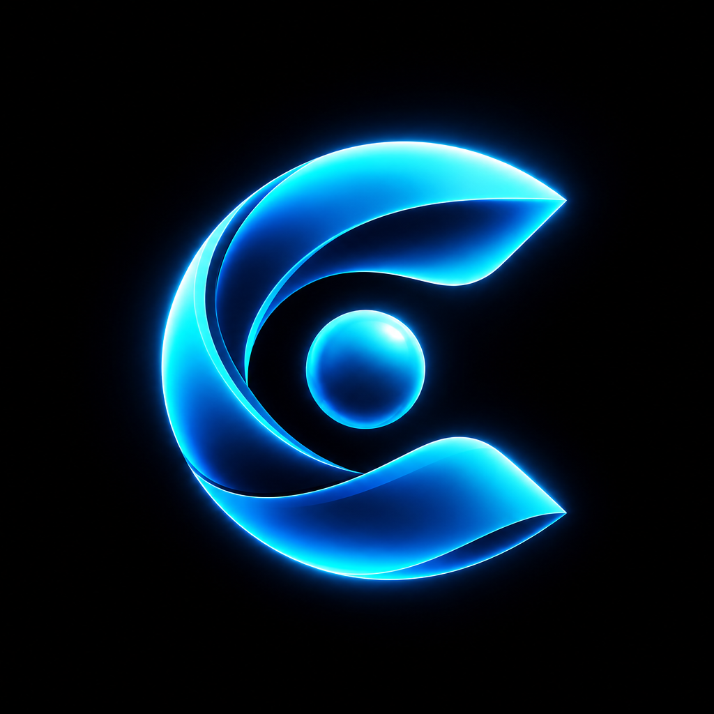

Cedulon
Missing evidence is itself evidence.
The open audit layer for agent-to-agent payments.
Every spend carries a signed receipt; the chain is reconciled against the rail's own ledger.
cedulon.com
Missing evidence is itself evidence.
The open audit layer for agent-to-agent payments.
Every spend carries a signed receipt; the chain is reconciled against the rail's own ledger.
cedulon.com
